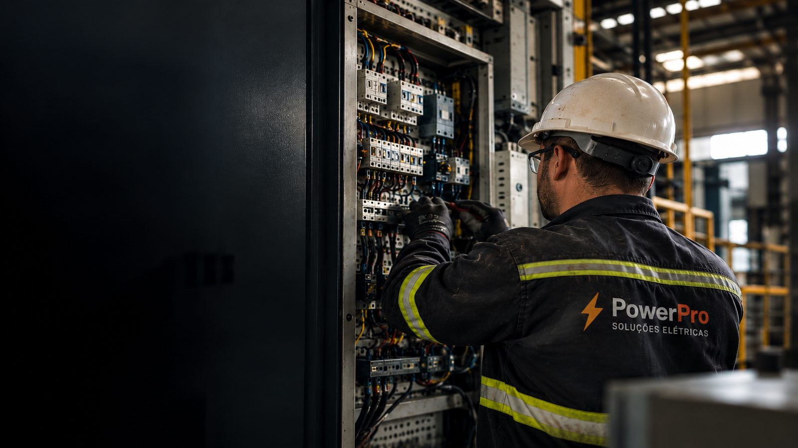

PowerPro Soluções Elétricas
Eletricista Industrial · Novo Hamburgo e Região
Manutenção, instalação e adequação elétrica industrial com diagnóstico técnico no local e documentação quando necessário.
Falar com um eletricista pelo WhatsApp
Diagnóstico no local RT quando necessário Atendimento regional

Novo Hamburgo e região metropolitana
Operação Segura
Produção em Movimento
Quando a Elétrica Para
Quadro de comando que falhou, máquina parada, entrada de energia com problema. Cada hora de produção parada custa dinheiro — e chamar qualquer um costuma custar mais caro depois.
Falha elétrica em máquina, painel ou alimentação pode interromper a operação.
A busca por alguém qualificado começa justamente quando a urgência já apareceu.
Resolver o problema sem registro técnico pode gerar retrabalho, auditoria ou problemas com seguro.
Alguns serviços exigem documentação técnica para auditoria, segurança ou compliance.
Sem depender de indicação de última hora. Com a Power Pro, sua empresa tem uma equipe especializada para chamar sempre que surgir uma necessidade elétrica, com histórico, documentação e previsibilidade.
Menos tempo de máquina parada
Documentação técnica organizada (RT, laudo)
Relação de longo prazo com quem já conhece sua planta
Tranquilidade de estar em conformidade com normas de segurança
★★★★★
"O Ezequiel prestou alguns serviços de elétrica, rede, instalação de câmeras e alarmes em nossa empresa. Todos os serviços foram executados com alta qualidade e capricho. O profissional é altamente capacitado e responsável, além de ser extremamente pontual e com uma relação custo-benefício muito maior que outras empresas, preço extremamente justo. Recomendo os serviços!"
ID Desenvolvimento
★★★★★
"Excelente profissional, usou apenas materiais de qualidade e tirou todas as minhas dúvidas."
Brahian Guedes
★★★★★
"Ótimo profissional, serviço realizado com muito capricho. Preço justo e muito atencioso para tirar todas as dúvidas. Super indico."
Kellin Francine
Você chama no WhatsApp e explica o problema ou a necessidade.
Agendamos a visita técnica para diagnóstico no local.
Você recebe o orçamento detalhado com a solução necessária.
Executamos o serviço com equipe técnica especializada.
Entregamos a documentação técnica (RT/laudo, quando aplicável).
"Nunca ouvi falar da Power Pro"
São 11 anos de mercado, atuação documentada com RT e garantia formal por contrato.
"Vou pedir mais de um orçamento"
Faça isso. Peça também que o outro orçamento inclua diagnóstico técnico prévio e emissão de laudo/RT. É isso que evita retrabalho e custos escondidos.
"Preciso resolver rápido, não posso esperar dias"
Atendimento ágil direto pelo WhatsApp com retorno rápido em horário comercial, de segunda a sexta.
Elétrica industrial não é lugar para "confia em mim". Todo serviço da Power Pro é formalizado em contrato, com prazo de garantia definido conforme o tipo de trabalho executado.
Novo Hamburgo, Campo Bom, São Leopoldo, Sapiranga, Dois Irmãos, Ivoti, Portão, Canoas, Porto Alegre e toda a região metropolitana, em um raio de até 60 km.
Sim, sempre que o serviço exigir documentação técnica formal conforme normas vigentes.
Sim. Esse é um dos principais motivos pelos quais empresas industriais nos procuram.
Fazemos uma visita técnica de diagnóstico antes de fechar o valor, para que você saiba exatamente o que está contratando e evite custos extras imprevisíveis.
Respondemos pelo WhatsApp em horário comercial, de segunda a sexta-feira, das 8h às 18h.
Atendimento rápido, diagnóstico técnico e documentação completa em toda a região metropolitana de Porto Alegre.